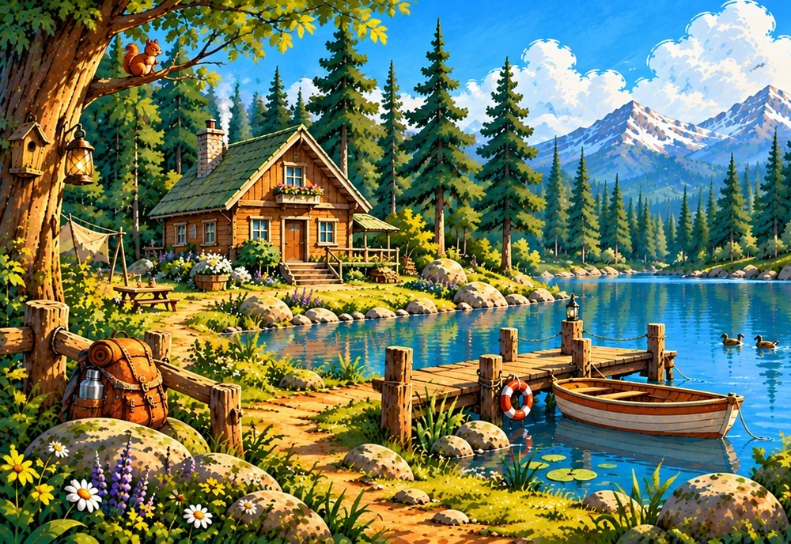
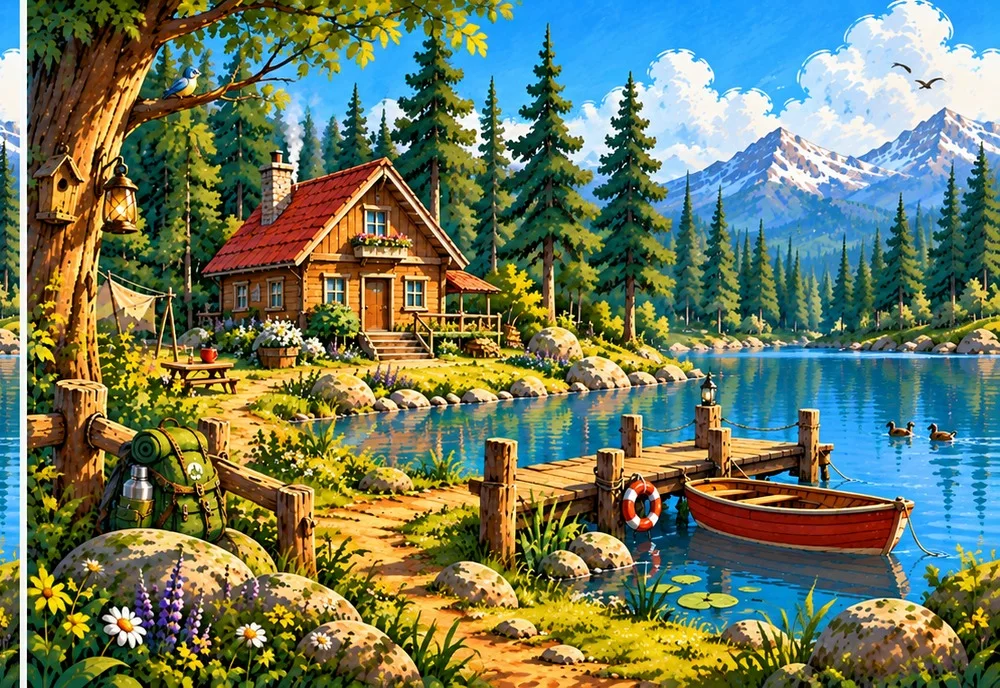

ИГРЫ ГОРИЗОНТА
Домик у озера
Найди 7 отличий между картинками

А
БУдачи! Отличия можно искать на любой из двух картинок.
НАЙДЕНО 0 / 7
Ура, все отличия найдены!
Отличная работа!
ИГРЫ ГОРИЗОНТА
Найди 7 отличий между картинками

А
БУдачи! Отличия можно искать на любой из двух картинок.
Отличная работа!